Figure 3.5. Explorative Experiment 1:
bidirectional I/O Graph zoomed time-range : Second 16 to 28
|
1Introduction 7
2OSI Layer 3 Link Aggregation Tunneling 9
A Description of a OSI Layer 3 Link Aggregation Tunneling Network Setup and its Purpose 9
1OSI Layer 3 Link Aggregation Tunneling 9
1.1Mechanics 9
2Purpose 10
Implementations 10
1Multipath VPN 10
2MLVPN 11
3Viprinet Bonding 11
3.1Network Architecture (Fig. 1) 12
3.2Encapsulation (Fig. 2) 13
Related technologies 13
1Multipath TCP 13
2SCTP Multihoming 14
2.1SCTP Problems and Drawbacks 14
2.2Conclusion 14
3Internet-Connection-Load-balancing 14
3.1Comparison to OSI Layer 3 Link Aggregation 15
Advantages 15
Disadvantages 15
3First Explorative Experiments 17
3.1The Testing Network 17
3.1.1Network Architecture and Overview 17
3.1.2Used Hardware 18
3.1.3Software Configurations 18
3.1.3.1Artificial Latency 18
3.1.3.2Setup of the Multipath VPN Software 19
3.2Results 19
3.2.1Default Linux Congestion Control: Same Latency 19
3.2.2 Default Linux Congestion Control, 100ms and 200ms Latency 21
3.2.2.1Throughput Analysis 21
3.2.2.2Reordering Analysis 22
3.2.3Summary and Next Steps 22
4The TCP Protocol and its Vulnerability to Packet Reordering 23
4.1A Short Description of the TCP Protocol 23
4.1.1Reliability 23
4.1.2Flow Control and Congestion Control 24
4.1.2.1The Sliding Window 24
4.1.2.2The Size of the Sliding Windows (Congestion Control and Flow Control) 24
4.1.3TCP Extensions: Fast Retransmit 25
4.1.3.1Changes on Receiver Site 25
4.1.3.2Changes on Sender Site 25
4.1.3.3Discussion of Advantages and Disadvantages 26
4.2Ways to Make the Linux TCP Implementation Less Vulnerable to Packet Reordering 26
4.2.1Configuration via /proc/sys/net/ Switches 26
4.2.2A New TCP for Persistent Packet Reordering 27
5A Closer Analysis of the Multipath VPN Implementation 29
5.1Involved Networking Resources 29
5.2The Event Driven Design 30
5.2.1The Perl POE Framework 30
5.3Working 31
6Seeking the Cause of Reordering 35
6.1Multipath VPN Implementation 35
6.2Linux IO Buffering and Scheduling 35
6.2.1Avoidability of Operating System Buffering induced Reordering 35
7Refined Experiments 37
7.1Test Setup and Hardware 37
7.1.1Differences to First Explorative Experiments 39
7.1.1.1Omitted “Internet” Gateway Routers IG0 and IG1 39
7.1.1.2VLANs Instead of Physical Networks and Ethernet Cards 39
Tagged VLANs Explanation and Configuration Details 39
Throughput or Performance Impacts 39
7.1.1.3More Capable Hardware for MTC and MTS 40
7.1.2About the Traffic Used to Measure 40
7.2Pre Measurements 41
7.2.1Pre-Measurement without Tunneling Daemon, 1 Link 41
7.2.2Pre-Measurement without Tunneling Daemon, 2 Links 41
7.2.3Pre-Measurement Multipath-vpn, 2 Links, without tcpdump 41
7.3Results on CPU Performance (I) 42
7.3.1Comparison of CPU Time Usage on MTC and on MTS (I) 43
7.3.1.1Goals 43
7.3.1.2What we Did 43
7.3.1.3Results and Interpretation 43
7.3.2Correlation between Throughput and CPU Time (II) 45
7.3.2.1Goals 45
7.3.2.2What we Did 45
7.3.2.3Results and Interpretation 45
7.3.3Differentiated CPU Usage Analysis (III) 46
7.3.3.1Goals 46
7.3.3.2What we Did 46
7.3.3.3Results and Interpretation 46
7.4Results on Connection Stability (II) 47
7.4.1Goals 47
7.4.2What we did 47
7.4.3Results 47
7.4.4Evaluation and Interpretation 48
7.5Results of Changing Linux Internal TCP Options (III) 49
7.5.1Goals 49
7.5.2What we did 49
7.5.2.1Series 1: Only Changing Sender TCP Configuration 49
7.5.2.2Series 2: Changing Sender and Receiver Configuration 49
7.5.3Results and Interpretation 50
7.5.3.1Explanation 51
8Conclusion 53
8.1Evaluation Summary and Optimisation Possibilities 53
8.2About the Application Domain 54
Appendix ADetailed Performance Measurement Results 55
A.1MTS: 100ms_200ms latency 55
A.2MTC: 100ms_200ms latency 56
Appendix BPerl POE Framework Example 59
Appendix CContent of the Accompanying Disk 61
Appendix DAcknowledgements 63
Bibliography 65
List of figures 67
In short and colloquial terms this work is about better internet. More precisely we evaluate, test and explain a concept and an implementation of a software which aims to provide a more reliable and faster internet connection. The concept is called “OSI Layer 3 Link Aggregation Tunneling”(OL3LAT) . The implementation we are testing and explaining is called “Multipath VPN”. OL3LAT works by aggregating several maybe slow or unreliable internet connections together to one fast reliable virtual internet connection.
This work begins with a concept chapter, describing the general concept of OL3LAT and how it works in general. We explain a example network architecture which (in slightly changed form) will be used for all experiments in the later chapters. Following we will propose several implementations, two open source ones and one commercial. In a last part we will explain related technologies like load balancing and Multipath TCP and what distinguishes them from OL3LAT.
The next chapter contains two Explorative experiments carried out with Multipath VPN to get a survey and feeling for it's performance, it's working and issues. Here we see that it's quite CPU time consuming and produces heavy packet reordering which makes congestion controlling difficult for TCP.
In the following TCP background chapter we explain how TCP works and why packet reordering is critical for its performance. Also we present two ways to make Linux TCP less vulnerable to packet reordering, which will be tested in a later chapter.
The next chapter will describe the implementation of Multipath VPN more closely. We explain the networking resources it uses: a TUN interface and UDP sockets and what they do. Also a more detailed description of the packet processing mechanics is provided.
In the next chapter we get to the nub of the observed packet reordering. In the explorative experiments chapter we had eliminated different latencies as the cause of reordering. In the Multipath VPN implementation chapter we had eliminated Multipath VPN as guiltier. So there remains: the operating systems. With the help of several Linux kernel development books we will prove that the kernel does packet buffering before sending in a way a user space process can not control. So finally a user space process has no definitive control over the point in time when a packet gets set on the medium. That means that the buffer of one uplink interface can decide to buffer several packets whereas the other has buffered (let's say ten) packets and now send all of them at once. This causes reordering. In a last section we look for ways to force the immediate sending of a packet. The answer of a Linux kernel developer and maintainer to exactly this question then gives the underwhelming result: it's almost impossible. Avoiding operating system buffering induced reordering would mean intricately additional software development work in kernel space.
In the penultimate chapter we present several refined experiments, whose design and structure contains the findings (and new questions) of the previous chapters. After a description of the hardware used and the design of the experiments we show the results of some pretests. The next sections belong to the results of the main experiments. Several experiments are done on performance, among others the connection between throughput and CPU time usage and a closer observation of the ratio between system-time and user-time of the needed CPU time. Surprisingly very much time is spent in user space. The next block of experiments will cover the connection failure tolerance of Multipath VPN. “What happens if one of the internet connections goes down?”. The result is less impressive then hoped the throughput stagnates to zero for 5 seconds until it (at least fast) regenerates. We offer supposition for the reason of this and in the conclusion also propose a solution.
The last block of refined experiments evaluates the efficiency of the two TCP option changes explained in the TCP chapter to make TCP less vulnerable to packet reordering. Again with not so impressive results. The throughput graphs do not look that different. The block ends with some research results and assumptions, why these options were net very effective in the case of Multipath VPN induced reordering.
The conclusion shortly summarises the findings of the previous chapters. In general Multipath VPN works and provides link aggregation which increases network throughput. Nevertheless this implementation is still in its child shoes, the reliability feature works suboptimal and the high CPU time consumption as well as the induced reordering are problematic. Fortunately for almost all of these issues a solution or optimisation is possible. We shortly explain those possibilities and their advantages as well as their disadvantages. We end with a short discussion analysis of the application domain of OL3LAT technologies in general, using the distinction of network traffic categories provided in [Ste93]. While OL3LAT is perfectly fitting for bulk data traffic applications, for interactive traffic it's still good but not perfectly suitable since the packet processing also introduce a little additional latency (throughout our experiments about 3-4 milliseconds).
This chapter will give a short description of the Multipath VPN network setup which this work centres around. An implementation of this setup will be used for the experiments in Chapter 3. The main purpose of Multipath VPN is making it possible to use multiple internet up-links and therefore improving network performance and reliability. After the technical description a short comparison of the Multipath VPN approach to other similar technologies will complete the chapter.
Although using 1 to n internet gateways is possible for simplicity, in this example and for the experiments a 2-gateway setup will be used, built in the following structure:
| 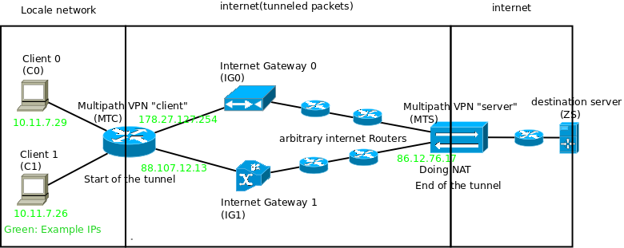 |
Figure 2.1. Example of a 2-gateway Multipath
Tunneling network setup.
|
The Clients C0,C1… in the local network use the Multipath-VPN “Client” MTC as their standard-gateway unaware of any tunnelling happening after this hop.
The Multipath-VPN Client MTC wraps the received segments in a custom packet-format and sends them (in default configuration via UDP) via IG0 and IG1 to MTS. The following splitting policies are possible:
Static ( 1 packet via IG0 ,1 via IG1, etc. see attached .conf file used in the experiment)
By destination port, destination ip, source port/ip etc.
Anything what can be used for a iptables rule for marking packets.
The Internet Gateways IG0 and IG1 know nothing of the Multipath-VPN setup. They only forward the UDP datagrams to their destination like any other unrelated UDP datagrams. Likewise work all the other routers on the path to MTS. It is a intended design decision that these nodes don't need any configuration or specific behaviour, because the network administrator of the Multipath VPN solution usually only has control over the nodes MTC and MTS.
The Multipath VPN Server MTS unwraps the packets and enqueues them into his incoming chain. Doing this, he behaves like any NAT-Router, substituting the source address on any packet with his address and forwarding it according to his routing table.
The destination Server ZS gets the packets, generated by the Client, like MTS has been his NAT internet-gateway, without noticing anything of the tunnelling.
The Way back works similar: If MTS receives a packet on a port corresponding to an established connection which has been created from the Multipath-VPN, he forwards this packet to MTC via IG0 and IG1. Thereto he does the usual NAT answer procedure (replacing the current destination IP(his) with the IP of the original sender) and routes the packet to the tun interface. The tun interface is created by the MTS software, which takes the packet, wraps it and settles the delivery to MTC. After MTC got the packets he unwraps them and forwards them in the local net.
The main purpose of this technology the usage of multiple internet connections as one internet-gateway for a local network to maximise throughput and reliability. Furthermore Multipath VPN has the following purposes:
Possibility of Encryption for network traffic (from MTC to MTS)
all other benefits of tunnelling
(i.e.: the internet-gateway doing NAT (MTS) and therefore the IP address our packets have to the outside world is chose-able, which enables some anonymity and source-deception).
Possibility of setting priorities for specific protocols. The free configurability of iptables gives the possibility to define very precisely which packets have to be delivered how.
Multipath VPN is a Open Source multipath tunneling solution implemented by Markus Schräder.
2.1. See: https://github.com/pRiVi/multipath-vpn , The full
source code is also supplied together with this work in the
directory: code.
Real world application experience with this software and some of its issues were the reason for the author for this bachelor thesis. Multipath VPN will be used for the experiments in the next chapters, as well as for a more detailed description of the implementation.
Since the Multipath VPN source Code is quite condensed, undocumented and difficult to understand a restructured, refactored,commented fork
2.2. See: https://github.com/richi235/multipath-vpn , The full
source code is also supplied together with this work in the
directory: code.
MLVPN (MultiLink Virtual Public Network)
2.3. See: https://github.com/zehome/MLVPN , The full source
code is also supplied together with this work in the
directory: code.
2.4. See the implementation section of the next chapter for
details on this.
Since it's written in C it runs on GNU/Linux and Free- and Open-BSD. There exist Debian packets and User documentation. It also supports privilege separation of the running binaries for security and encryption+authentication. Multipath VPN currently runs entirely as root and uses no encryption. So for actual use MLVPN is recommended whereas for studying and analysing Multipath VPN will be chosen, since for this a smaller less complicated code base is of advantage and security concerns are no central topic of this work.
Viprinet is a german company which sells multipath tunneling (or bonding as they call it) solutions to business customers. In this context “Solution” solution means:
Their hardware (own branded router boxes)
Software
Running and maintaining the remote server (end of the tunnel, MTS in previous diagrams)
Since this is a proprietary closed source product, closer research and description is not possible. Anyway there exists a german software patent[Gmb13] called “Anordnung˙ zum Übermitteln eines Datenstroms über gebündelte ˙Netzwerkzugangsleitungen, sowie Sende- und Empfangshilfsvorrichtung ˙dafür”.
It describes the structure and mechanics of their product quite accurate and contains the following (hand drawn) diagram of their network architecture and encapsulation concept:
| 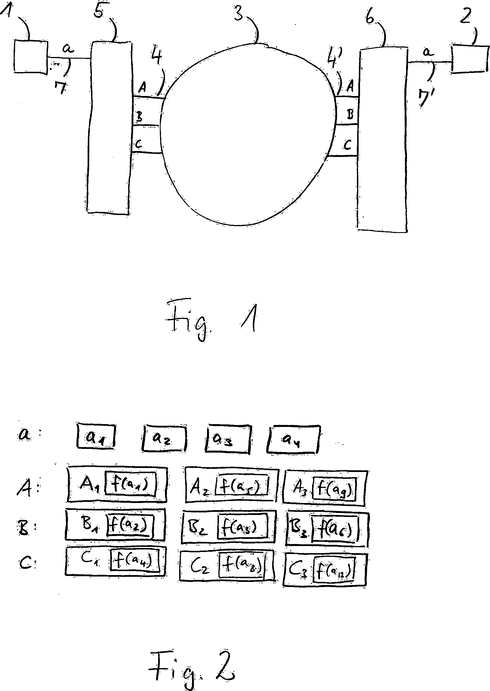 |
Figure 2.2. Diagram of the viprinet
network(Fig.1) and encapsulation(Fig.2) concepts from the
patent.
|
In Fig.1 of Figure 2 element 5 is called “Sendehilfsvorrichtung” (german for auxiliary sending appliance) and does roughly the same thing as MTC described below, which is: encapsulating packets and choosing transmission lines.
The same applies for the “Empfangshilfsvorrichtung” (element 6) which is therefore comparable to MTS. The big round circle in the middle (element 3) symbolises the internet.
As visible and described in [Gmb13] viprinet also uses encapsulation and tunneling of whole IP packets. The f() function visible symbolises encryption. In the patent text they recommend SSL/TLS but don't specify which encryption their product actually uses.
While Multipath TCP achieves roughly the same (sending data over multiple physical carriers), the network architecture and realisation differ, because the points where the multipath “tunnel” starts and ends differ. Using Multipath TCP the Hosts establishing the connection already use several internet connections, as visible in the following simplified diagram, taken from the official Multipath TCP presentation foils[Bon13] :
| 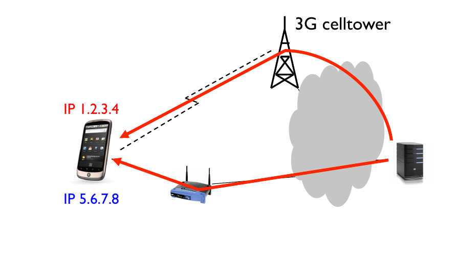 |
The fact that the connection-end points manage the multiple internet connections has several practical implications:
The clients or connection end points have to implement the new Multipath TCP protocol in their operating systems network stack.
This implementation is currently not very widespread, at the time of this writing
2.5. 13.06.2015
Microsoft Windows does not ship one per default and also no one seems to exist.
There is a implementation for the Linux kernel, but it has not been merged into the mainline kernel
2.6. The multipath TCP project offers own prebuild
Linux kernels including the implementation for Debian
GNU/Linux, Ubuntu, Gentoo and several other popular
distributions. Also they offer patches for people who
build their own kernels.
2.7. A short and informal test has shown that
multipath TCP often doesn't use the full bandwidth of
all existing internet connections. Also their seem to
be problems with NAT or OpenVPN tunnels visible from
several github issues.
The connection end point needs access to all the internet uplinks available. While this makes sense for a mobile device containing Wifi and UMTS access technology for a office computer at a company this is impractical. Giving all computers direct access to all internet uplinks means additional wiring or at least additional configuration for using several virtual networks over one wire.
The SCTP protocol provides a feature called Multihoming which is comparable to the multipath functionalities of Multipath TCP. [BAR+] contains an extensive comparison of these two protocol and their multipath performance in an intercontinental test-bed between Germany and china.
SCTP is a reliable in-order OSI Layer 4 protocol comparable to TCP but message boundaries are preserved like in UDP. Also SCTP provides some other additional features, but they are out of scope for this work, for additional details on SCTP see: [ Ste07 ] on
2.8. https://tools.ietf.org/html/rfc4960
Contrary to it's progressive features there are some issues which make using SCTP for real world application difficult:
OSI Layer 4 protocol support in most cases has to be part of the operating system, Microsoft Windows
2.9. The official microsoft answer to this is: “We
have not seen sufficient customer demand to add SCTP
support to Windows”, see:
https://connect.microsoft.com/VisualStudio/feedback/details/651980/sctp-support
For usage of SCTP with NAT, the Nat router has to understand SCTP, while support for UDP and TCP is built into most routers for SCTP this feature is missing in most hardware[Ran]. Since Nat is a very widely used feature this is a huge blocker for SCTP.
To benefit from the advantages of SCTP userspace applications have to be rewritten to use the SCTP networking API of the operating system, which is a big effort for rewriting existing TCP software.
Like Multipath TCP SCTP requires another network architecture than OSI Layer 3 Link Aggregation to work, so a direct comparison is not useful, since the fields of applications are different. And like Multipath TCP SCTP currently suffers from the low spread on desktop and consumer devices since every client has to support it for the multiple features to work. This is a point where (currently) link aggregation and the next technology “Internet-connection-load-balancing” have their advantages because using these, only the router of the local net has to know and use the several internet connections to make the bandwidth available to all.
Another possibility to use multiple internet connections together is Internet-Connection-Load-balancing. It differs from Multipath-VPN in the following properties:
The Router decides for every to-be-established connection separately which network interface (for example DSL, DOCSIS etc.) shall be used. Once established all packets of this connection are sent and received through this interface.
The packets are sent directly to their destination, their is no additional Gateway node (no MTS)
Tunnelling using a specific container format does not happen.
Though these 2 network setups have one thing in common, which the previously presented Multipath-TCP does not share:
In both configurations, the router(s) have full control over the packet delivery. In both scenarios it's possible to define protocol and address specific rules.
2.10. This property is widely used in real world applications.
For example to swap high priority traffic on a dedicated
internet connection. Often this is internet telephony or a
separate line for ssh connections.
After the description of the Internet-Connection-Load-balancing technology the next section will give a discussion and comparison of these 2 technologies.
Lower complexity
There is no tunnelling software running on client(MTC) or server(MTS), which has to wrap the packets in a own container-format. Therefore two sources of error are omitted.
The CPU Load for the involved router(s) is much lower
Like most other VPN daemons,the Multipath-VPN-Software is implemented as a user space process on Windows and UNIX. So for every single packet, which is put into the tun0 interface by the kernel, a context switch to the user space is necessary. Especially smaller ARM Routers with clock frequencies below 1 GHz this has proven as a network performance limiting fact in real world applications.
This load disintegrates completely when using I.C.-Load-balancing the previously described separate routing of single connections can be taken out completely by the kernel, with no context switches necessary.
No separate server as internet gateway (MTS) needed.
Which saves upkeep and maintenance effort.
So altogether I.C.-Load-balancing is less complex and therefore holds fewer sources of errors but has the following disadvantages:
Less dynamic
Once A TCP or UDP Connection has been established via DSL or DOCSIS up-link α it can not be moved to up-link β.
Therefore an optimal distribution of the traffic on all the internet uplinks is not always possible. Especially because at the point in time when the connection is established and the router has to decide which up-link to use, he does not “know” how much up- and downstream traffic this connection will need.
Multipath VPN doesn't know this problem because the distribution happens “deeper” in the network stack. MTS anyway gets all the traffic and sends them out with his address, no matter via which IGx he got it.
No dedicated encryption or anonymisation possible
Also all the other advantages of tunnelling vanish
Lower failure safety
If a internet up-link breaks down, all the the TCP and UDP connections which used this up-link are affected and broken. This does not happen when using Multipath VPN and a internet up-link breaks down, here all the packets of an TCP or UDP connection can still be routed over the other uplinks, although they are now under a heavier load of course.
The extensive possibilities of configuration, which traffic goes through internet up-link, is a property both technologies share. Although with Multipath VPN being a bit more dynamic and flexible in that aspect.
Finally, there must be said, that none technology is really superior. Depending on purpose, available hardware, and experience of the staff the right technology has to be chosen individually.
The whole network was designed with the goal of recreating the real world application of multipath vpn as closely as possible, to make it possible to reproduce and analyse the throughput breakdowns noticed in application. This may explain some of the following design decisions.
For the experiment an architecture similar to the previously presented generic network architecture has been chosen:
| 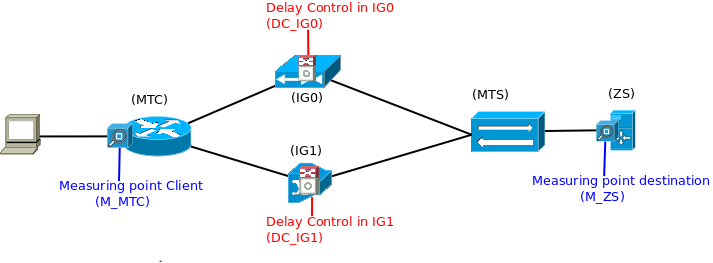 |
This was done to make sure all involved nodes really route the datagrams through the network instead of only relaying Ethernet frames.
The Linux network stacks treats these two cases differently in several ways (See figure 3.3 for a diagram of the decisions during the processing of incoming packets.)
Because in actual real world application case routing happens in these nodes, several sub-nets and routing was chosen to the Linux kernel networking behaviour more close to that.
All nodes (except for the testers client notebook) were
500 MHz AMD Geode LX800 (AMDs Intel-Atom counterpart with comparable low power and Head losses)
256 MB DDR DRAM
2-3 Fast Ethernet Cards (depending on specific sub-model)
For more detailed info's, see the vendor's product page [ Gmb ]
The following picture is a photography of the actual testing network and hardware during the experiment:
| 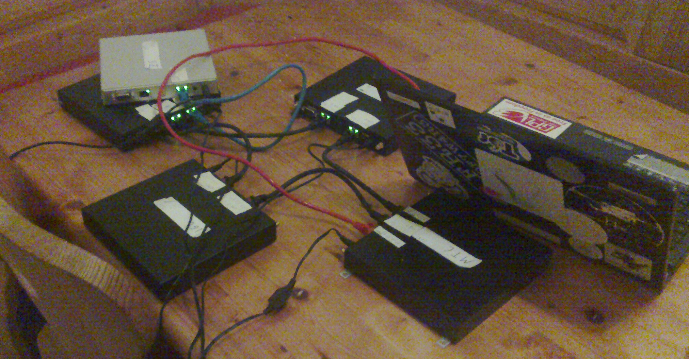 |
Figure 3.2. Photography of the Breadboard
construction. (A concrete realisation of the testing network
architecture in Figure 3.1)
|
For the creation of the artificial Latency the Linux tool tc was used, together with the sub-module netem. As a concrete example the command:
tc qdisc add dev eth0 root netem delay 100ms
would add an additional delay of 100ms to every frame going out through the network interface eth0. So to add a realistic delay to IG0 and IG1 it was needed to set tc disciplines on both interfaces so every packet going through (in any direction) gets the same delay.
How tc and netem work can be better understood with a little knowledge of how the Linux kernel handles packets. This simplified
3.2. The diagram had to be simplified, because it was much to
big to layout. Mainly details about the iptables ad ebtables
rooting chain were removed and infos how and when packets can
jump from the link layer to the network layer processing. The
full image is accessible via netfilter.org
(Section 11 detailed picture) [dSF] [Sny].
| 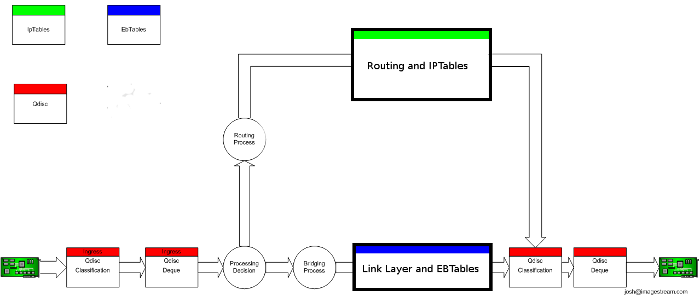 |
Figure 3.3. Processing of Packets in
the Linux Kernel (simplified) [dSF] [Sny]
|
As recognisable the evaluation of the Qdiscs (all red boxes) happens before and after anything else in the Linux kernel. Since the netem delay module only affects outgoing packets, only the two last red “boxes” are relevant, directly prior to passing the frames to the NIC. Every packet passing the 2nd red box will be held back for the specified time until it will be forwarded. While this method of delay creation is not completely similar to the real world application with several routers on the way to the MTS, all with their own buffering, it's quite comparable. With the delay happening outside the routing process it's more comparable to happening “somewhere outside on the line or in an other router” than some manipulation with iptables.
Both Multipath VPN instances (MTC and MTS) were configured to use the two network interfaces belonging to the two different connecting NICs and ethernet wires with a ratio of 1:1. The concrete configuration files used can be found on the accompanying disk in the folder "multipath-vpn_conf".
During the 82,6 seconds almost exactly 75.0 MByte of payload
3.3. Obtained this info from the ACK value of the last
transmitted segment from ZS to MTS
| 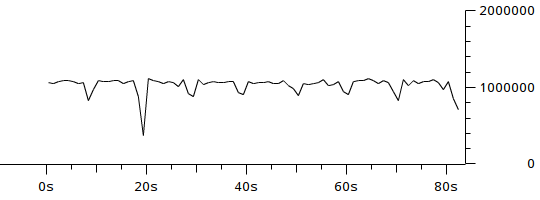 |
Figure 3.4. Explorative Experiment 1:
full bidirectional Network I/O Graph, Y-Axis in Bytes I/O
(payload) per second
|
The worst traffic collapse happens around 20s so let's look more precisely what happens around this time:
|
Figure 3.5. Explorative Experiment 1:
bidirectional I/O Graph zoomed time-range : Second 16 to 28
|
Here 2 facts attract attention:
The throughput is permanently staggering.
Shortly before second 20 the throughput vanishes completely for about 0.4 seconds.
To diagnose more precisely what happens in this time-span a closer look at the single packets and their attributes is needed:
| 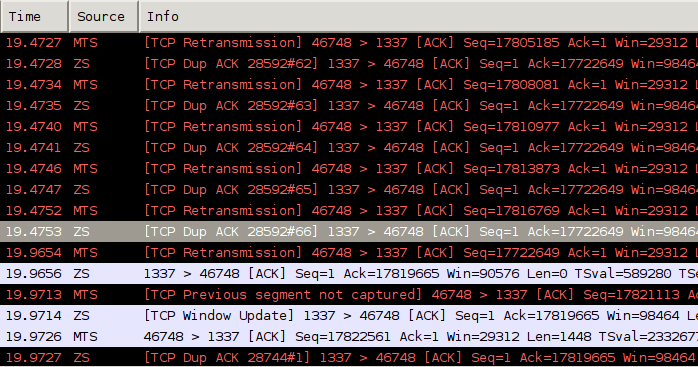 |
Figure 3.6. Wireshark screenshot: packet details
in previously discussed time-range.
|
Here several facts get visible:
Packet reordering is happening.
Wireshark marks all Packets he recognises as reordering-affected with black background and red font. As visible here this applies for the major part of packets in this little time span. Actually, this is true for the major part of packets of the whole transmission.
This case is in particular interesting and extreme because here MTS gets 66 DUP-ACKs for frame 28592
3.4. Wireshark counts all frames of a recorded
transmission autonomous, 28592 is the wireshark-intern
frame-number of the packet for which ZS sends DUP-ACKs
It should be mentioned, that the wireshark detection and marking of TCP Re-transmissions has (in contrast to the marking of the DUP-ACKs) some uncertainty. Every Time wireshark sees a packet containing a Sequence number lower than another previously seen packet of the same sender, wireshark marks it as Re-transmission. While the having-a-lower-sequence number fact can be a consequence of re-transmission, it can also be a consequence of reordering, which very likely is the case in this experiment in most cases.
After second 19.47 (marked packet) the sender is not sending for about 0.5 seconds.
Compared to all the other packet sending intervals in this transmission and as visible in the throughput diagrams this is a alarming huge time-span.
In this experiment we observed intensive packet reordering, although both link have the same, very low latency. For comparison the next section will show the throughput over time for a network using different latencies on the two links.
During the next experiment, with a artificial delay of 100ms on one link and 200ms on the other link, we measured the throughput illustrated in figure 3.7.
| 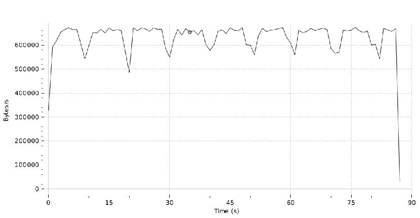 |
Figure 3.7. Explorative Experiment
2: Bidirectional I/O Graph
|
In 87 seconds 48.229 Mbytes of payload were transferred, so the average goodput was 554 Kbyte/s.
This lower throughput is a consequence of the higher latency, to explain this a short excurse on TCP window sizes and and latencies is helpful:
Remark
The maximal possible througput in a TCP connection depends on the maximal receive window size and the network latency in the following correlation:
| TCP window Size in KBytes |
| Latency in Seconds |
Reason:
The maximal possible amount of data a TCP host can send at a point in time is the size of the Receiver's receive window. After he has sent this data (this can be several packets) he has to wait for one complete round trip time before he gets an ACK an can send new data. [Tan03] [Ins81]
If we want to calculate the estimated maximum possible throughput in this experiment according to this formula, we need to know the TCP window size. Fortunately this can be obtained from the traffic dump file it's about 98000 Bytes for over 98% percent of the packets, for the estimation we will use these values. For latency we will take the arithmetical median of the two links which is 150ms, remember this is just an raw estimation.
| 98.000 KBytes |
| 0.150 s |
653.33 KByte/s is a good estimation for the maximum throughput phases observed in the diagram, which occur several times but often get interrupted by reordering induced spikes.
In general the relative throughput spread range in figure 3.7 is comparable to that in figure 3.4 (consider that the two diagrams do not use the same y-axis Byte/s resolution). There is one exception, the big spike in the first experiment at second 20. Since we do not know how reproducible this one is and if it could or could net happen in the second experiment as well we decided to ignore this difference.
Through this experiments we learned several facts about this OSI Layer 3 Link Aggregation Tunneling implementation:
Massive Packet reordering even happens in a network with two uplinks of same latency so different latencies are not the only reason for packet reordering. Since the reordering induced jitter in a different-latencies network is comparable to that in a equal-latencies network, we even assume that different latencies only play a secondary rule as reordering cause.
We will explain the results of further research on packet reordering in chapter 6.
For low latencies and moderate receive window sizes Multipath VPN's throughput is CPU bound. For the hardware used the boundary in our experiment was at about 910 KByte/s. Several experiments and analyses on CPU performance will be presented in chapter 7
These explorative experiments gave us a good overview and clear direction what to examine next.
A TCP-Connection guarantees a reliable, ordered and error-checked connection between to sockets on two computers. In the OSI networking layer model TCP implements layer 4, the transport layer, in most cases TCP segments are contained in IP packets, and contain the data of the application layer. This chapter will give a short overview how TCP achieves this reliable and error-checked end-to-end connection, but at first a few terms.
Sockets are the endpoints of TCP connections
Each connection between 2 computers is uniquely identified by the following four-tuple:
(source-ip-address, source-port, destination-ip-address, destination-port)
4.1. For a practical example, on Linux Systems the command
netstat -t -n lists all the currently
established TCP connections together with this 4-tuple of
information. netstat -l -t -n lists all
the listening, not-yet-connection-established sockets.
A TCP connection is bi-directional, therefore sending and receiving data is possible for both hosts.
For the following explanations let's assume this example:
| 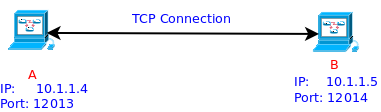 |
For the simplicity we will only examine one direction, these of B sending data to A.
So, how does a TCP implementation assure, all parts of the data-stream get delivered correctly? This is done using 2 mechanisms:
The receiver sends TCP segments containing an ACK flag and an ACK number telling how mach data and until-which byte of the data-stream he has received data.
4.2. These “Ack-Segments” of course can
contain Payload data themselves, and so serve a double
purpose: transport Data of
4.3. Whether for every received segment from the sender
an ACK segment is sent or for every second, third etc.
depends on the implementation, TCP extensions and the
fact how many segments have just been received.
The sender starts a Timer for every sent segment.If this timer exceeds a certain timeout (the RTO Re-transmission Timeout) the segment is re-sent.[Ins81]
Each TCP segment sent contains a check-sum calculated over the following information:
The “Control”-Data of a Pseudo-header containing the information of the TCP and the IP Header
The Payload data
Therefore, if a TCP segment is received, its integrity can be checked and corresponding ACK info can be sent or not.[Ins81]
The next questions of relevance for the following chapters are: “How much data (or how many segments) does B send without getting an ACK and how does he keep track of all the ACKed and non-ACKed data?”. These questions will be answered in the next chapter.
The sliding window algorithm is a concept for the sender to keep track of the sent segments and which of them are or are not ACKed. It contains all the segments, which are sent but not yet ACKed. Like the following figure illustrates:
 |
Figure 4.2. Illustration of the sliding window
principle[Kri]
|
Here with every ACK message the window moves from left to right over the data stream, leaving behind successfully processed data. On every move of the sliding window, the sender sends the new segments which just came into the window.
Using a sliding window brings the following benefits over simpler positive acknowledgement protocols:
The sender can send several segments at once and doesn't have to wait for acknowledgements of every segment.
The receiver can ACK several segments an once.
For these reasons TCP uses a sliding window concept for the senders.
The size of the senders sliding window (in the following called snd.wnd) is not fixed but merely changing on almost every ACKed segment or timeout. The value of snd.wnd is calculated as the minimum of the following two values:
The amount of bytes the receiver is currently willing to receive. This value is part of the TCP Header and is sent with every segment the receiver sends to the sender. The Flow Control part of TCP is done using this value.
Example: If the application on receiver site, processing the data is quite slow and the data buffer of his operating system corresponding to the TCP socket get's near or on it's limit, the receiver can send a smaller rwin value to ensure he won't get “to much” data.
A value maintained and used by the sender to do Congestion Control i.e. adjust the amount of sent data to the capacity of the network. A TCP Connection starts with a quite small value and increases it over time (details on this see slow start). For example if a packet loss is detected through timeout this value is set to it's initial (or halved depending on the implementation). This value is internally maintained by the Operating system TCP implementation and therefore not as easily visible in a network dump as rwin.
4.4. For interested readers: On Linux based operating
systems since v2.6 the TCP implementation contains the
get_info() method to read out such values. The command
line tool ss uses this call. Using ss -t
-i one can read out the current sender-cwnd values
of all currently established TCP connection, the values
are displayed as “number of segments possible to
send” and therefore have to be multiplied with the
(also displayed) value of MSS +
≈20Byte(Size of TCP Header).
The following Chapters explained the working of the plain TCP protocol as defined in RFC 793 in 1981. Since then many extensions and improvements have been discussed and implemented.
One extension of significance for this work is Fast Retransmit:
Fast Retransmit makes it possible to detect and correct packet loss much faster than only using the traditional re-transmission-timeout(RTO) method. This is achieved using the following mechanism:
Let's assume the sender has just send 5 Segments with the (simplified) sequence numbers: 2,3,4,5,6 and segment 3 gets lost on the way to the receiver,so after a short time, the receiver get's the segments 2,4,5 and 6. As a result, the receiver will at first send an ACK for segment 2, and then an further duplicate-ACK (short DUPACK) for every further arriving segment being not the immediate following one of segment 2 [APS99].
If the sender gets 4 ACK segments which fulfil one of the following requirements:
They all acknowledge the same Byte-stream position (ACK number)
the 2nd, 3rd… acknowledge a Byte-stream position prior to the first one.
he immediately re-sends the segment directly following the first one and decreases cwnd to the half of its size [APS99](a timeout in the old RTO mechanism would mean a resetting of cwnd to its start value which would have a much worse impact on the connection's bandwidth).
The following diagram illustrates the described mechanics on Sender and receiver site:
 |
Figure 4.3. Illustration of the Fast Retransmit
mechanics.[frt]
|
At last an example of fast re-transmission observed in a real network:
 |
Figure 4.4. Example of Fast Retransmit in
network traffic. (Measured in wireshark)
|
A connection between the network hosts MTS and ZS. The left column indicates the sender of a segment. In this example MTS is bulk sending data to ZS(sender), while ZS is only receiving and sending ACK segments(receiver).
MTS starts with a data packet marked with Sequence number 2049 (the Seq=… field) of Length 1448 Bytes (the Len=… field).
ZS acknowledges the receiving of this whole segment send an ACK segment with ACK number 3497 ( = 2049 + 1448). Therefore the SEQ number ZS expects is 3497 (the 2049th byte is the first of the 1448 delivered ones, therefore ZS just got all bytes up to including 3496).
But instead of 3497 ZS gets a segment with the SEQ number 4945, so a part of the stream is missing and ZS sends the first DUPACK for 3497.
The 2 subsequent arriving segments with SEQ numbers greater than 4945 are also answered with a DUPACK.
Until finally MTS sends the correct segment containing the SEQ number 3497.
While the fast retransmit extension brings a faster detection of packet losses and therefore faster re-transmissions it has one big problem: it can't distinguish between packet loss and packet reordering. It simply get's a number of segments like 2,5,6,4, diagnoses packet loss and triggers re-sending, also if packet 3 arrives shortly after that and actually the segments just got delivered out of order.
Of course the receiver will send a ACK segment for segment 6 as fast as possible, after he received segment 4, but the 3 DUPACKS have already been sent so the sender will halve his cwnd and with this the connection bandwidth will lower.
This type of reordering, without packet loss, called persistent-reordering, is the Achilles heel of the TCP Fast Retransmit extension as you will see in the following chapters.
When packet reordering induced throughput reduction becomes a problem, there a two ways to take countermeasures for a performance engineer.
One way is to avoid or reduce reordering. In Chapter 6 we will try to understand the reasons for reordering using Multipath VPN and reason about possibilities to avoid it.
Another way is to make the operating systems TCP implementation more resistant to packet reordering, in this section we will show and explain several measures to do this, some of them will be used and tested in section 7.5.
Linux offers several switches to configure TCP internals via the virtual proc filesystem. Two of these switches are relevant for TCP reordering resistance and will be explained in this section.
The Linux programmer's manual[15] on this option says:
[tcp_reordering (integer; default: 3; since Linux 2.4)]
The maximum a packet can be reordered in a TCP packet stream without TCP assuming packet loss and going into slow start. It is not advisable to change this number. This is a packet reordering detection metric designed to minimise unnecessary back off and retransmits provoked by reordering of packets on a connection.
In section 7.5 we will change this options to significant higher values and check the results.
The Linux programmers's manual[15] on this is quite short:
tcp_fack (Boolean; default: enabled; since Linux 2.2)
Enable TCP Forward Acknowledgement support.
[Sar02] gives a more elaborate explanation and reasoning in regards to packet reordering:
The Forward Acknowledgements (FACK) algorithm [14] takes a more aggressive approach and considers the unacknowledged holes between the SACK blocks as lost packets. Although this approach often results in better TCP per- formance than the conservative approach, it is overly aggressive if packets have been reordered in the network, because the holes be- tween SACK blocks do not indicate lost packets in this case.
So another part of our experiments in section 7.5 will be measuring the effect of turning out tcp_fack on the tcp throughput performance.
In 2006 Stephan Bohacek, Katia Obraczka and several others released the paper “A New TCP for Persistent Packet Reordering” [BHL+06] covering an alternative TCP algorithm which performs better than existing methods in case of persistent packet reordering.
TCP-PR realizes this by not using duplicate acknowledgements (DUPACKs) at all and relying only on timers. Additionally it contains concepts to detect packet loses that belong to one “loss event” and accordingly reduces the send window size only once.
Since this concept sounded quite promising and there existed a provisional Linux kernel implementation we wanted to test this approach in our experiments. Unfortunately the code
4.5. Kindly provided by Katia Obraczka, thanks.
Multipath VPN uses two different kinds of network entities: TUN devices and UDP Sockets in the following structure.
| 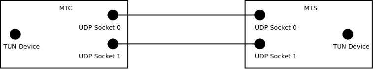 |
Figure 5.1. Diagram of the network interfaces
and resources used by Multipath VPN
|
These entities have the following characteristics and usage:
The TUN or TAP interface [tun]
A TUN as well as a TAP interface is a network interface on a UNIX Operating System comparable to eth0 or or wlan0.
But while conventional network interfaces transport packets between the network stack and Hardware (like Ethernet chips or Wifi cards), TUN and TAP interfaces transport data between the network stack and user space processes:
| |
||||||
Figure 5.2. A Simplified Comparison of
tun/tap Interfaces to Conventional Network Interfaces
|
MultipathVPN runs as one user space process and uses such a interface to get all the packets it has to handle. Therefore on startup the following is done:
A TUN interface is created and MultipathVPN associates itself with it.
An IP route is configured which directs all (or the traffic which shall be tunneled according to the configuration file) packets to the TUN interface.
The difference between TUN and TAP interfaces is the type of packet it delivers to and from the user space process:
|
|||||
Multipath VPN uses a TUN interface by which it get's IP packets which it wraps to the other end of the tunnel, where they get unwraped. There they are injected into the Operating Systems networking stack via a TUN interface and thereby processed and delivered to their destination.
UDP Sockets
The tunnel endpoints are connected to each other via UDP connections. Each UDP connection ends in a UDP Socket on each host. The number of UDP connections available and used corresponds to the number of internet uplinks available.
Each packet obtained from the TUN interface will be sent through one of the available UDP sockets. Remember that the UDP Sockets an operating system offers to user space expect data, wrap it into an UDP packet for you and send it to its destination. This means the IP packets will be sent as application layer payload, which means some attention has to be spent on the MTU of the different interfaces to avoid performance consuming fragmentation.
If packets are received via a UDP socket the data multipath VPN assumes them to be IP datagrams and puts them into the TUN device on its site through which they will be delivered to their destination.
Multipath VPN works event-driven which means:
Definition
Per default an event driven program rests and waits for events from the “outside” (like an network packet from the TUN interface which has to be processed).
For every considered event there exists an event handler function to handle this.
Often there exists one main loop which iterates over all the possible sources of events and checks for new events.
Also since Multipath VPN makes excessive use of the
The POE Kernel is the main loop this Framework provides the programmer. It gets all events as first entity and decides which event handler will be called. Also elementary scheduling and timer functionality is done by the kernel.
A session is a set of event handler which belong semantically together. A session gets initialised on its definition and has one initialisation event-handler called _start. Furthermore each session has its own heap of private data. Additionally sessions build one semantic unit for the scheduling of the POE Kernel and events have to be addressed to a specific session. All this makes a session in some regards comparable to a task or even a process.
All this can be understood better with a simple example:
With these knowledge of the concepts and frameworks used the foundations have been laid to understand the networking internals of Multipath VPN.
Two types of Sessions of Multipath VPN are especially relevant for understanding the networking logic: The TUN-Interface Session and the UDP-Socket Session.
In this example we will briefly show the most relevant code snippets of these sections and explain them.
Handles receiving packets from and sending packets through the TUN Interface
Contains 3 Event Handlers:
Creates and configures the TUN interface.
Simplified implementation code:
got_packet_from_tun_device => sub {
# read data from the tun device
while ( sysread( $heap->{tun_device}, my $buf = "", TUN_MAX_FRAME ) )
#Decision begin
foreach my $sessid (
sort( {( $sessions->{$a}->{tried} || 0 )
<=> ( $sessions->{$b}->{tried} || 0 ) }
keys( %$sessions))
)
{
if ($sessions->{$sessid}->{factor})
{
$sessions->{$sessid}->{tried} += ( 1 / $sessions->{$sessid}->{factor} );
}
unless ( $nodeadpeer || $sessions->{$sessid}->{con}->{active} )
{
next;
}
#Decision end
$_[KERNEL]->call( $sessid => "send_through_udp" => $buf );
last;
}
}
},
Here we see at least some of the reasons for the high CPU load. The code between the #Decission begin and #Decision end comment is responsible for deciding what UDP socket to use for sending the current packet. It involves a call to the sort() function, resolving of the keys of a hash-map ( keys() function) and definition of an internal sorting order via the <=> operator. Additionally every -> operator means reference resolving overhead. All this could be implemented much cheaper using a state machine, instead of sorting the elements of a hash map every time and calculating factors using division.
One should also keep in mind that each ->{…} in Perl means a hash map lookup which also of course means some key hashing and lookup overhead.
Consists of the following code
put_into_tun_device => sub {
[…] # POE specific argument passing
# write data of $buf into the tun-device
my $size = syswrite( $heap->{tun_device}, $buf );
unless ( $size == length($buf) )
{
print $size . " != " . length($buf) . "\n";
}
},
Fortunately this event handler is quite straightforward. The most important part is the blue marked syswrite() method call. Syswrite tells the Perl vm that it should not use its own perlio buffering system but directly call the system call write(). This event handler gets called for every single packet received from each one of the UDP socket sessions.
Handles receiving packets from and sending packets through the UDP Socket
From the 5 Event Handlers in this session the following 2 are relevant for our examination:
This event handler gets invoked by the POE framework if new data arrives on the udp socket this handler belongs too. It begins with a completely fine
while ( defined( $heap->{udp_socket}->recv( $curinput, 1600 ) ) )
loop header, calling the recv function on the socket. One performance issue we should note is, that this call again involves one hashmap lookup (->{..} in Perl) and two reference resolvings, which (if happening very often) are also problematic for performance.
The next two lines have similar problems:
$heap->{con}->{lastdstip} = $heap->{udp_socket}->peerhost();
$heap->{con}->{lastdstport} = $heap->{udp_socket}->peerport();
The involve altogether 6 hashmap lookups, 8 de-referencing operations and 2 method calls. Since this happens for every packet received it looks like a good source of CPU time consumption.
A few words about the last relevant part:
$kernel->call( $tuntapsession =>"put_into_tun_device", $curinput);
In essence $kernel->call() is equivalent to a function call. One could think that this function call means expensive copying of data, fortunately it doesn't since Perl by default uses call by value for all function calls.[Chr12]
This event handler gets called from get_packet_from_tun_device and basically has the same issues as got_data_from_udp. Additionally it contains the following lines:
if ( $heap->{con}->{dstip} && $heap->{con}->{dstport} ) {
if ( my $dstip = inet_aton( $heap->{con}->{dstip} ) ) {
$to = pack_sockaddr_in( $heap->{con}->{dstport}, $dstip );
}
which involve the inet_aton() function. inet_aton() converts a string containing nothing but a IP address to a binary representation which is used and needed by most syscalls [Chr12] [SFR04]. The pack_sockaddr_in() call packs it's parameters into a data structure needed by the Perl socket implementation. These two function calls could be avoided if the conversion would be executed once and the result stored in the heap of the session. Even if the addresses change due to ip changes or other circumstances, it is possible to trigger an event for this and only reconvert the structures in this case, instead of for every packet to be sent.
In this chapter we looked closer at the implementation of Multipath VPN and the networking resources it uses. In addition to a closer understanding of its mechanics we indicated several code hunks which constitute potential performance problems.
How does the reordering observed in the explorative experiments develop? Is it possible to prevent or avoid it? In this chapter we take a closer look at the Multipath VPN software and the Linux networking system. This will reveal, that the reordering is a exigent consequence of how Berkeley network sockets and the I/O Buffering system of Linux work.
The previous chapter explained the details of how Multipath VPN processes incoming and outgoing packets. This whole process is quite straightforward, packets are processed in the order Multipath VPN gets them from the tun interface (or a udp socket). Multipath VPN does not buffer several packets or actively reorder them. So we can safely assume the Multipath VPN software is not directly responsible for the reordering observed at the connection endpoints.
So Multipath VPN is not directly responsible but a technology it uses is, like the next section will explain.
Multipath VPN uses the Networking capabilities of the Linux kernel to send it's packet i.e. sockets, network interfaces.
Linux handles the packet queue of every network interfaces separately.[ Riv ]
6.1. The Raoul Rives Docs are some introductory slides about
Linux kernel networking, accessible at: his
university page. The diagram and description relevant here
can be found in chapter “Data Link Layer” on slide
20.
There exists no concept like “user space program x first put P1 into eth0 then P2 into eth1 then P3 into eth0, therefore I best should process one packet of eth0, then one of eth1 and then one of eth0 again”. In the kernel the execution of each interface queue is handled separately and independent of such a “user space interfaces hopping order”.
Even worse: from the point of an operating system scheduler often it makes sense to send several packets in the queue of an interface at once and then doing something else like file-system or terminal I/O or give control to another user space process. And then several milliseconds later send some packets in the queue of the other network interface.[Ros13][HA10]
To avoid operating system buffering induced reordering it would be necessary to turn of the packet buffering the Linux kernel does. There are two buffers on the way of every packet through the kernel:[Ros13][WCB07]
The socket buffer, belonging to the socket the application is using
The ring buffer of the network interface
To avoid any buffering and therefore buffering induced reordering it would be necessary to set both of this buffers to size zero or avoid using them at all, which would in our case mean “send a udp packet directly without any buffering in the kernel”. To find out if it is possible to use the Linux kernel this way, we asked the kernel developer and subsystem maintainer Richard Weiberger via Email. His answer was (full mail including our quoted question):
Richard, Am 16.02.2016 um 16:27 schrieb Richard Sailer:
Hello Mr. Weinberger, I have a question regarding the kernel networking stack and NIC ringbuffers. As a userspace process, is it possible to force immediate sending of a udp datagram? (i.e. without any buffering of the datagram with following ones in the Ringbuffer of NIC) ‘‘just to set the frame on the wire immediately"?
if you're using sockets the packet will always go though the kernel networking stack and my be queued int some buffers. Most likely within the buffer of the BSD socket. To have the frame immediately you'd have to implement your own interface. i.e. passing a packet directly to the network card driver or implement the driver in userspace using a framework like DPDK. Thanks, //richard -- sigma star gmbh - Bundesstrasse 3 - 6111 Volders - Austria ATU66964118 - FN 374287y
So unfortunately, in the case of Multipath VPN, avoidance of the operating system buffering induced reordering would mean some quite intricately additional software development.
The results of the first explorative experiments as well the thoughts of the previous chapters clarified the necessity of further refined experiments. In this chapter we will analyse the following aspects of the implementation Multipath VPN:
Context switches and detailed CPU statistics in relation to throughput
Stability of connection and throughput when one link goes down
The effect of changing several Linux internal TCP options on throughput
Each of this aspect got his own experiment, often several, at the beginning of each experiment we will explain what we changed in the configuration, what we wanted to measure and what we measured.
Especially for measuring the correlation between CPU speed and throughput other, more capable computers were necessary for the tunnel entrance and exit (MTC and MTS), the next section descries the hardware used, the test setup and the differences to the first explorative experiments.
The following picture shows the hardware and test setup used:
| 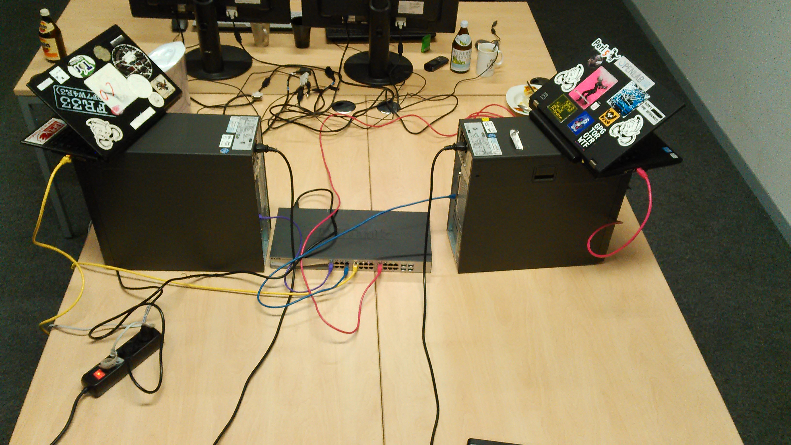 |
While this picture is very illustrative it does not show very much detail about routing or network configuration, so we included the following diagram to show the network architecture:
In Figure 7.2 boxes are computers while lines are VLAN connections (more on these in section 7.1.1.2). The gentle reader may have noticed that two computers from the first explorative experiment were omitted: The routers of the internet gateways IG0 IG1.
Mainly because of practical and time constraint reasons several differences to the first explorative experiments were chosen.
At our current level of understanding of OSI Layer 3 Link aggregation, the two router computers used in the first explorative experiments were omittable and their existence had no relevant effect on the results. Additionally The results of the first experiments (which are very similar to the explorative ones in design on purpose) affirm this.
The theoretical background for this decision is the following:
The latency created by them is almost similar and negligible low.
A small check using ping in the explorative experiments measured about 0.8 ms.
Creating artificially latency is still possible without them.
By lying the same tc add … configuration on the output and input VLAN devices on MTC and MTS.
In the explorative Experiments MTC and MTS had 3 NICs and 3 LAN ports each, which were necessary (1 for connection to C0/ZS, 1 for IG0 and 1 for IG1). For the refined experiments it was not possible to recreate this configuration since not enough PCI-e network cards were available to extend the provided computers. Therefore we used tagged VLANs according to IEEE 802.1q to create 3 virtual OSI Layer 2 networks for each NIC.
Using VLAN every ethernet frame contains an additional attribute its vlanid or vid. When a adequate configured Linux host receives a ethernet frame containing such a vid he automatically associates this frame with the belonging virtual network interface. So in our experiment every host had 3 virtual network interfaces, each one receiving and sending ethernet frames containing complying vids. So for example the network interface eth2.6 was a virtual network interface on top of eth2 sending and receiving frames of the VLAN 6.
Additionally the switch was configured to know the vids and to switch the right ethernet frames to the right ports. This is why in the picture you see only 4 ethernet wires, 2 wires from MTC and MTS to the switch, each one transporting frames of 3 different vlans. The two wires between C0 or ZS and the switch only transported frames of 1 vlan.
Additional details on the vlan configuration are noted in Figure 7.2 . A good explanation for a deeper understanding of VLANs can be found in [ Tan03 ]. Howtos for concrete usage and configuration are available on the documentation websites of most Linux distributions, for example
7.1. https://wiki.ubuntu.com/vlan
For the experiments it was important to know the performance and Throughput impact of using tagged VLANs. It can be broke down to the following facts:
Since all 3 virtual network interface of MTC and MTS base on one physical gigabit ethernet network interface their maximal combined throughput is of course limited by the physical interfaces' maximal throughput. To rule out this fact would become the bottleneck we did some pretests to measure the pure throughput of the interface (traffic between MTS and MTC, no tunneling) and fortunately the final throughput of Multipath VPN was always less than 1/2
7.2. Imagine 10 Frames reach MTC via eth1.12, after
Multipath VPN has divided them 5 leave through eth1.5
and 5 leave to eth1.6. So in the end 10 frames have
reached and 10 frames (=20) have left MTC to tunnel a
payload of 10 frames. So the throughput MTC can
transport (physically) is half of the throughput the
ethernet interface can handle since every frame passes
this interface twice.
One could think that parsing and understanding the vids for every single frame means additional CPU load. Fortunately it doesn't since the NICs used in MTC and MTS supported VLAN offloading (verified via the ethernet configuration utility ethtool), which means all the CPU-intensive vlan handling was done by the NIC hardware.
So fortunately for our experiments the choice of another OSI Layer 2 switching method had no measurable effect on any of the results.
In the explorative experiments we discovered that the network throughput of Multipath VPN is CPU-bound. To be more precise bound to the CPU performance of the computers used for MTC and MTS in the network, these computers had a permanent CPU load of 100%, measured with the unix command top. Compared to this on the C0 and ZS computers the CPU load was about 10% i.e. no significant bottleneck.
To measure how significant CPU performance is for throughput in the refined experiments several changes were chosen for the refined experiments:
We used computers with much more powerful CPUs: Intel Core i7-2600 (4 real cores, 8 hyper threading cores with 3,4 GHz each), instead of the 500 MHz single-core AMD Geode low power processor in the first experiments.
We did extra measurements for CPU load and CPU usage details using the tool pidstat
Those two measures gave us extensive possibilities to measure the CPU usage behaviour of Multipath VPN.
The traffic used to measure had the following properties worth mentioning:
It's One-directional bulk traffic
So none of the following experiments can tell any information on the capabilities of Multipath VPN for interactive Applications over TCP.
On the other hand, this way we simulate a very common use case: the download of one single file from a fast server.
It's One singular TCP connection
This property has 2 reasons:
It's much easier to create one connection, than to create several.
It's much easier to observe and analyse the sequence numbers and details of one connection than of several.
It's entirely consisting of binary zeroes.
Created by the command nc <target-ip> <target-port> < /dev/zero
And received by the command: nc -l <port> > /dev/null
Usually we sent those zeroes from C0 to ZS. On ZS the number and details of incoming traffic was measured using the tcpdump utility and written to a .pcap file, which we later analysed using the software wireshark. wireshark was also used for generating the throughput graphs in this works. All .pcap files of all experiments can be found on the disk accompanying this document in the subfolder of every experiment.
If we changed traffic direction or measurement points in a experiment it will be noted explicitly in the evaluation of the experiment.
While most of the properties were chosen for test-setup-practical reasons the choice for bulk traffic was done because bulk traffic is necessary measure the CPU performance and maximal possible throughput.
A short test of the network connection without any tunneling or vpn daemon enabled gave a pure netto throughput rate of about 92.1 MByte/s. The CPU Load was about 18% for the nc process (about 80 of this in kernel space) on one of the 8 hyper threading cores of MTC.
|
|||||||
Table 7.1. Netto Bandwidth and CPU
Load without Tunneling, 1 Link
|
Using 2 Ethernet physical links between MTC and MTS (and 2 netcat processes one for each interface) the throughput measured was:
Again, about 80% of the CPU time related to nc were spent in kernel space. The values on MTS were equivalent. Here you see the throughput stays equivalent no matter if we use one virtual VLAN interface (Table 7.1 ) or two. Actually using 2 virtual interfaces the traffic is a little higher but 0.3 MB/s are in the area of the normal throughput fluctuations we observed, the same is true for the CPU time percentage.
|
|||||||||||||
Table 7.3. Rough Throughput Values of Network
with Multipath-VPN enabled
|
The fact we already schematically mentioned in section 7.1.1.2 you see here in concrete numbers, fortunately the tunnel throughput of 19 MB/s is less than half of the pure untunneled throughput 92.1 MByste/s.
The questions to be answered regarding CPU performance are several. Therefore this section will answer the following 4 questions, each in a own subsection:
“Are the CPU loads on MTC and MTS different, so we have to measure them separately in every experiment or is there a correlation”.
“Is there a correlation between throughput and CPU time and if yes, is it linear?”
What percentage of the CPU load happens in user-space which percentage happens in kernel space. Where lies the optimisation potential.
By means of these experiments we wanted to find out whether there is a correlation between CPU time usages on MTC on MTS.
From a theoretical point of view there should be a correlation. Every package processed on MTC has to be processed on MTS in a comparable way and vice versa. Nevertheless this should not be assumed quietly for the following experiments there we did these measurements first.
Our results were measured in a experiment in the following configuration:
The general test setup according to 7.1y
Artificial latency created the same way as in the explorative experiments in 3.1.3.1 (using the tc utility and the netem module). Set to 100ms on one link and 200ms on the other.
Unidirectional bulk traffic
On MTC and MTS the CPU time usage was measured using the pidstat utility of the sysstat package (available on all major GNU/Linux distributions). The concrete command used was:pidstat -wrud 1 > results.
The full pidstat output results are available on the CD accompanying this work
7.3. In the Folder:
Experimente/second_experiment_series(07.02.16)/orig/100ms_200ms/with_perf_measurementss
Also we did a second performance measurement experiment with the following configuration:
Similar to the previous first one
But producing no artificial latencies at all.
Figure 7.3 shows the CPU time usage on MTC and MTS side by side:
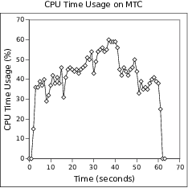 |
Figure 7.3. CPU Time Usage over Time
on MTS and MTC compared Side by Side
|
As you can see the CPU Time usage over time is quite similar quantity and quality, every time there is a usage Time breakdown on MTC an equivalent one happens on MTC, the same is true for spikes. These correlation gets even more visible if you look at the concrete percentage values in the full results included in Appendix A, there the percentage values for a corresponding time entry since transfer start often match with little to no difference.
The same results were observed for measurements with no artificial delay on both links (second experiment), the CPU usage values showed strong similarity. Since they were quite redundant no graphs were included for them, but the pidstat output is included on the CD as well.
We have to mention that all this CPU usage happened on 1 core, therefore all this graphs only contain the load of one core. Multipath VPN has no multithreading functionality at all, this will be discussed more thoroughly in the next two sections.
Through these experiments we wanted to find out if there is a connection between CPU time usage and throughput.
Our results were measured in a experiment in the following configuration:
The general test setup according to 7.1
No artificial latency
CPU time measurement with pidstat exactly like in experiment series (I)
Again, the full results are available on the disk accompanying this document.
Unidirectional bulk traffic
A side by side comparison of CPU time usage on MTS and the throughput received at ZS is visible in figure 7.4.
 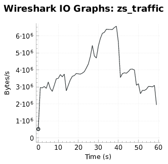 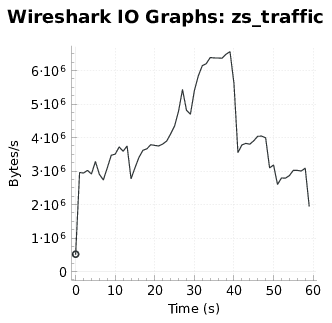 |
Figure 7.4. Side by Side comparison
of CPU Time Usage on Tunnel Exit (MTS) and Data Throughput
|
While the two graphs are not completely equal they are quite similar. Every time the throughput rate drops (most likely because of reordering induced send window reductions), the CPU time usage drops in a similar fashion. For example this can be observed at second 7, 14, 29, 41, 51 and finally at the transmission termination at second 60.
After this results we can safely assume that throughput and CPU time usage are directly linked in Multipath VPN. Especially since this findings match with our understanding of the code and the way Multipath VPN works. Every packet has to be processed separately and this processing of course costs CPU time.
By means of these experiments we wanted to find out where exactly all the CPU time is used and for what. Since the used measurement tool pidstat shows system-time and user-time separately, we can get some insights on this question.
Our results were measured in a experiment in the following configuration:
The general test setup according to 7.1
No artificial latency
CPU time measurement with pidstat exactly like in experiment series (I)
Again, the full results are available on the disk accompanying this document.
Unidirectional bulk traffic
Since we are not interested in the changing of the system-time to user-time ratio over time but the average values throughout the whole experiments the results are displayed in table 7.4:
|
||||||
Table 7.4. Percentages of User and
System Time of the Multipath VPN Perl Process in a Network with no
Artificial Latency and 100% cpu load of one core.
|
We were expecting that Multipath VPN would spent most of it's time in kernel space (i.e. system time) since the context switches necessary between user-mode (taking the packets from tun interface) to system-mode (processing and sending the packets through the network interfaces), are usually a quite time consuming task[Ros13] and are accounted as system time[Ben06][Ros13].
This is a strong indicator that in userspace the process is doing some extremely expensive and perhaps (non necessary) work. This could be frequent copying of data between functions or processing or reading the data in some way like for example with a regular expression engine (This suspicion is mentioned because using regular expressions on data is a very common way often used to solve problems in Perl).
For this section we wanted to stress test the connection stability features of Multipath VPN. Or in other words: How changes the throughput over time if one of the links between MTC and MTS becomes unavailable?
Our results were measured in a experiment in the following configuration:
The general test setup according to 7.1
No artificial latency at all
At second 45 we took the virtual network interface eth2.5 on MTS down and with this disconnected the link IG0 to MTC. 20 seconds later we took eth2.5 up again and therefore reconnected.
7.4. Since these timings and manipulations were done
manually and using by looking on a stopwatch, perfect
accuracy can not be guaranteed. It's also possible the
real interrupt time were 19 or 22 seconds, therefore the
results of these experiments have to be taken with a grain
of salt and are rather roundabout qualitative values.
Traffic sent from CO to ZS and measured via tcpdump on ZS. (Same as in general setup)
Figure 7.5. Throughput over time when
disconnection one uplink for 20 seconds
|
Here you can observe several things:
After we disconnected one link the throughput over Multipath VPN suddenly dropped to zero Bytes/s and stagnated completely for about 7 seconds. It took Multipath VPN about 8 seconds to recover completely.
Explanation:
We currently assume that this drop to zero happens as a result of the following process:
In the code of Multipath VPN there exists no feature to get the state of the used network interface or to be informed of the unavailability of an interface.
So short-time-speaking Multipath VPN does not know about a link loss and continues to put packets into the socket belonging to the broken link.
Since all this packets won't be delivered this means a huge packet loss.
This packet loss causes the sender (C0) to reduce his send window (cwnd) further and further.
And during this time no stream traffic will can be transported because only every second packet arrives.
There exists a Target Reach-ability Check loop, but it runs all 5 seconds. So eventually this loop notices that the link is down and disable the corresponding
Now a continuous packet stream is possible again and TCP can restore it's original throughput and send window size (cwnd).
The Target Reach-ability Check loop interval of 5 seconds fits quite well to the observed values.
Nevertheless the TCP Connection did not break or disconnect.
After recovering the throughput returned to its old level, although using only one link.
Explanation:
In this experiment, without any artificial latency, the throughput bottleneck is not the network but the cpu. Even one Ethernet wire can transport the maximal CPU processable throughput of 20 MB/s.
It even seems the throughput is somewhat increased using one link and decreases a little when the link is reconnected again.
Explanation:
This can have 2 reasons:
A lower amount of packet reordering means lesser spuriously assumed packet losses and send window reductions.
The existence of only one link means less computational work is necessary for Multipath VPN. The complete “decision making” process which had to be done for every packet gets quite simple now, perhaps this reduced cpu power need is the reason for the slightly increased throughput.
In the end, the time span in which the increased traffic occurred was to short to decide which one of this reasons is responsible. Also the increase in throughput is not that significant to decide anything for sure. It is up to future studies or experiments to analyse this phenomenon more precisely.
This experiment though not very sophisticated and without any additional measurement besides traffic, gave several deep insights into the workings und logic of Multipath VPN.
In section 4.2.1 we introduced two Linux internal TCP configuration switches which can improve the throughput performance in a network suffering of reordering. With these experiments we will evaluate how much throughput or traffic regularity can be approved with several different configurations.
In this section we want to find out what effect changing the Linux tcp options tcp_reordering on the sending computer and on sender and receiver to different values higher than 3, has on throughput through an OSI Layer 3 Link Aggregation Network.
Additionally we will try disabling tcp_fack and observe the effects.
Our results were measured in a experiment in the following configuration:
The general test setup according to 7.1
No artificial latency at all
Additionally to this base configuration we carried out several experiments in two different series:
On the Sender (C0) the configurations were:
tcp_reordering = 5
tcp_reordering = 10
tcp_reordering = 15
tcp_reordering = 15 + tcp_fack disabled
On both computers the configurations were:
tcp_reordering = 15 + tcp_fack disabled
tcp_reordering = 30 + tcp_fack disabled
tcp_reordering = 300 + tcp_fack disabled
tcp_reordering = 0 + tcp_fack disabled
Frustratingly adjusting the mentioned options does not change very much at all in means of throughput. This subsection contains 3 throughput over time figures, the first one is measured with the default settings for these 2 options, in the second one we changed tcp_reordering to 15 and disables tcp_fack on sender site, for the third one set this values for sender and receiver site:
| 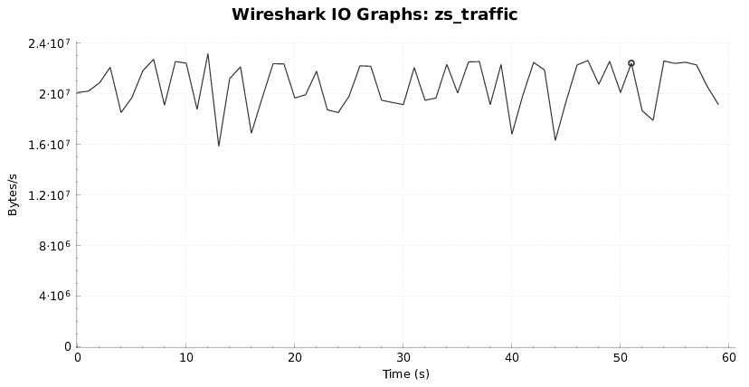 |
Figure 7.6. Network Throughput Diagram, Without
any TCP Options
|
| 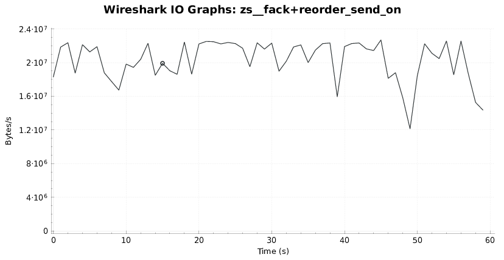 |
Figure 7.7. Network Throughput Diagram, with
Sender side modifications: tcp_reordering=15 and tcp_fack disabled
|
| 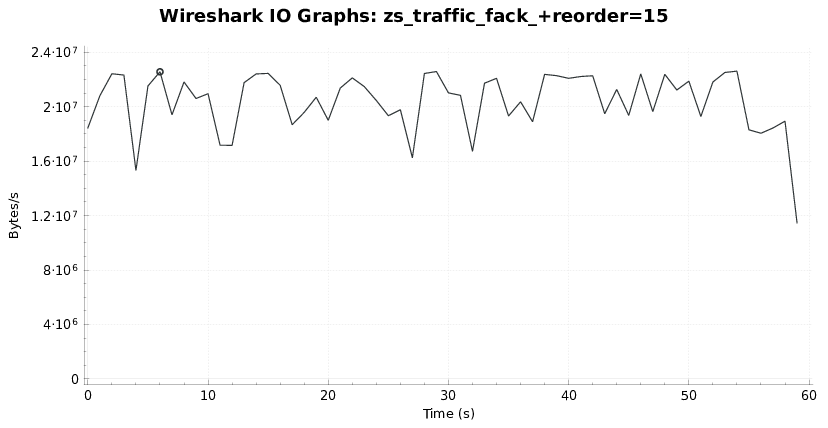 |
Figure 7.8. Network Throughput Diagram, with
Sender and Receiver-side modifications: tcp_reordering=15 and
tcp_fack disabled
|
None of the three figures displays a smooth transfer rate, all 3 contain oscillations of comparable amplitude. We assume all this oscillations are a result of tcp performing fast recovery after receiving several reordered packets.
Another possibility to compare these three scenarios is by total throughput, table 7.5 contains the total throughput of all 3 experiments, measured by the last Acknowledgement number of the last ACK segment sent by the receiver.
|
|||||||||
Table 7.5. Total Throughput in the
three TCP Options experiments, compared
|
Again the values don't vary very much, there doesn't seem to be a big difference.
Since the two TCP options used are sparely documented kernel internals currently we can only make assumptions by reading the provided documentation. For tcp_reordering reading the official documentation very precisely word by word can give an answer:
The maximum a packet can be reordered in a TCP packet stream without TCP assuming packet loss and going into slow start.
Here the term is “and going into slow start” which means the sender starts again with a cwnd window of 1. It does not say anything about preventing halving or reducing cwnd, so we assume this option would have solved a problem we never had(an even more critical processing of DUPACKs) but not our problem.
Similar would be a are a explanation for the lacking efficacy of tcp_fack. As a reminder tcp_fack works together with tcp_sack, the Selective Acknowledgement extension of TCP. With tcp_sack a receiver can tell the sender “I received packet 7,9 and 13”, usually the packets in between are assumed as in flight, and measures are only taken if DUPACKs or Timeouts occurs. The change tcp_fack introduces that such “gap packets” are explicit assumed lost, resent and cwnd is adjusted.
Such “gap packets” and corresponding of SACK messages often occur in networks suffering from a high rate of reordering, where the packets are not really lost, in these cases tcp_fack assumes packets as lost which aren't and overcorrects to aggressively, so disabling tcp_fack can bring advantages. Unfortunately in our case the reason for the frequent cwnd adaptions doesn't seem to be SACK and FACK induced retransmission and cwnd reducing, so disabling tcp_fack showed no big effect.
Finally we can conclude that the OSI Layer 3 Link Aggregation Tunneling implementation evaluated Multipath VPN is still in it's child shoes. It works but throughput, cpu time need and reliability behaviour have issues. For most of these issues fixes are possible which are summarised:
Through several experiments we detected that the CPU time need of Multipath VPN is quite high. On a Intel Core i7-2600 the maximum reachable throughput was 20 MB/s. Depending on the capability of the internet uplinks and latencies this can be a boundary.
Possibilities for Optimization:
Fortunately several possibilities for optimisation exist:
Since Multipath VPN is single threaded only one core of the 8 ones in the experiment was used. Here Multithreading would help. One way to distribute the workload would be to assign one thread for the “receiving direction” and one core for the “sending direction”.
All further splitting salvages the possibility of locking problems or creation of additional packet reordering. To avoid additional reordering every thread could handle one TCP connection. Nevertheless without further research we can not safely tell how well such further splitting to more than 2 threads perform since additional locking for sockets and the tun interface may be necessary with an correlative performance penalty.
In all the experiments we measured CPU time the amount of CPU time spent in user space was larger than that spent in kernel space. In the least extreme case the ratio of user-time to system-time was 1.4. This is strange for a program that does a lot of context switches, since these are expensive and are accounted as system-time.
This high ratio of user-time is a strong indicator for available optimisation potential. And Fortunately optimisation of user space code is way less complicated than optimising kernel space and getting the changes merged into the upstream project.
This of course would be the most drastic and costly measure. And the most effective, in kernel space all data copying between kernel space and user space would vanish as well as all privilege mode switches.
If one of several links goes down the traffic tunneled through Multipath VPN stagnates to zero. After five seconds Multipath VPN realizes the unavailability of this links and adapts its distribution of packets to links, and the packet flow regenerates. The 5 second interval is hardcoded. While tcp connections survive this stagnation for voip sessions over UDP this stagnation is problematic.
Possibilities for Optimization:
On most modern Linux systems it is possible to register for the event notification of connection loss and so to get informed of every connection loss via DBUS immediately. This would allow a much quicker handling of connection loses, a smoother drop to the new throughput rate and therefore a much less disturbing users experience.
Our experiments showed that a packet stream being tunneled through Multipath VPN gets reordered, especially heavy in networks with low latencies. This reordering is noxious for the way TCP tries to detect packets losses and triggers spurious retransmit and send rate reductions. Although this effect never was the limiting factor for the maximum possible throughput (CPU power, or latency and Receive Window size was), it was the reason for serious staggering of the throughput rate. In one experiment, the reordering induced a number of Duplicate Acknowledgements that high, the sender stopped to send at all for about 0.4 seconds.
Possibilities for Optimization:
The source of packet reordering is not Multipath VPN or different latencies, but the way the Linux kernel buffers and processes packets. On Linux it is not possible to send a UDP packet immediately to the wire, forcefully pushing it through the ring buffer of the network device. Packets get buffered in this device ring buffer and sent together in a way a user space process has no influence on. So if the avoidance of the OS buffering induced reordering is impossible, what can we do?
Basically there exist two options:
It is possible to create a buffer of the unpacked packets (one buffer for each TCP connection) and re-reorder an array of pointers to the segments according to their sequence numbers. While this solves the reordering issue it introduces two new problems: additional cpu time need and a higher latency for every packet, since it will stay in this re-reordering buffer for some time.
Linux TCP offers two switches accessible via the /proc/sys/net virtual file system which can make TCP more resistant to reordering and avoid the possibilities of spurious retransmit and send rate reduction. In our experiments we evaluated two of them but could not measure any change in throughput stability.
Following the tradition of TCP/IP Illustrated by Richard Stevens[Ste93] we distinguish between two different uses of transport layer protocols:
Interactive Data Flow
Examples for this category of traffic are:
Remote shell or remote desktop sessions (like ssh or windows rdp)
Remote Procedure Calls (RPC)
Online Gaming (Quake, OpenArena)
For a good interactive data flow service a low network latency is very important, a high network throughput is no core requirement.
Bulk Data Flow
Examples for this category of traffic are:
Downloads
Movie Streaming
Uploads
The requirements on the network of this category are the opposite of the previous category. For bulk data flow applications a high throughput is very important to work satisfactory whereas low latency is secondary.
Knowing these examples it gets clear that bulk data flow is the preferred application domain of OSI Layer 3 Link Aggregation Tunneling solutions, since in this domain it's advantages, higher throughput and reliability are needed. Of course the additional packet processing means a small additional latency. This small additional latency means no significant problem for interactive data flow. Nevertheless compared to load balancing it makes OSI Layer 3 Link Aggregation Tunneling less optimal for users only needing interactive data flow.
#Time %usr %system %CPU CPU cswch/s nvcswch/s Command 01001 1.00 0.00 1.00 0 7.00 0.00 perl 01002 0.00 0.00 0.00 0 15.00 0.00 perl 01003 10.00 5.00 15.00 0 99.00 15.00 perl 01004 25.00 12.00 37.00 0 724.00 25.00 perl 01005 28.00 12.00 40.00 0 1276.00 24.00 perl 01006 27.00 14.00 41.00 0 1087.00 29.00 perl 01007 25.00 13.00 38.00 0 950.00 26.00 perl 01008 25.00 13.00 38.00 0 965.00 24.00 perl 01009 23.00 6.00 29.00 4 415.00 12.00 perl 01010 21.00 14.00 35.00 0 456.00 22.00 perl 01011 22.00 13.00 35.00 0 528.00 25.00 perl 01012 29.00 16.00 45.00 0 1075.00 36.00 perl 01013 30.00 11.00 41.00 0 1011.00 24.00 perl 01014 31.00 14.00 45.00 0 1044.00 29.00 perl 01015 30.00 12.00 42.00 0 859.00 19.00 perl 01016 35.00 13.00 48.00 1 1264.00 25.00 perl 01017 21.00 11.00 32.00 0 551.00 28.00 perl 01018 26.00 14.00 40.00 0 923.00 27.00 perl 01019 31.00 17.00 48.00 0 1191.00 27.00 perl 01020 35.00 12.00 47.00 4 1396.00 19.00 perl 01021 35.00 12.00 47.00 0 1341.00 28.00 perl 01022 32.00 14.00 46.00 0 1696.00 17.00 perl 01023 35.00 15.00 50.00 0 1503.00 31.00 perl 01024 33.00 14.00 47.00 1 1561.00 21.00 perl 01025 38.00 7.00 45.00 1 1599.00 14.00 perl 01026 33.00 13.00 46.00 0 1265.00 20.00 perl 01027 38.00 13.00 51.00 0 1241.00 31.00 perl 01028 40.00 15.00 55.00 1 1574.00 20.00 perl 01029 39.00 15.00 54.00 1 1651.00 20.00 perl 01030 41.00 17.00 58.00 0 1453.00 30.00 perl 01031 29.00 16.00 45.00 0 813.00 38.00 perl 01032 33.00 20.00 53.00 0 991.00 37.00 perl 01033 36.00 19.00 55.00 0 1448.00 39.00 perl 01034 40.00 21.00 61.00 0 1196.00 37.00 perl 01035 41.00 21.00 62.00 0 1188.00 39.00 perl 01036 45.00 15.00 60.00 1 1662.00 24.00 perl 01037 41.00 20.00 61.00 0 1836.00 30.00 perl 01038 46.00 20.00 66.00 3 1857.00 37.00 perl 01039 44.00 18.00 62.00 0 2000.00 36.00 perl 01040 52.00 12.00 64.00 0 1929.00 22.00 perl 01041 42.00 20.00 62.00 0 2035.00 31.00 perl 01042 43.00 15.00 58.00 0 2173.00 37.00 perl 01043 32.00 15.00 47.00 0 1182.00 29.00 perl 01044 28.00 17.00 45.00 0 1316.00 35.00 perl 01045 34.00 11.00 45.00 1 1638.00 15.00 perl 01046 34.00 10.00 44.00 0 1236.00 16.00 perl 01047 30.00 9.00 39.00 0 892.00 19.00 perl 01048 32.00 17.00 49.00 1 1156.00 36.00 perl 01049 32.00 17.00 49.00 0 1490.00 29.00 perl 01050 33.00 13.00 46.00 0 1608.00 30.00 perl 01051 30.00 15.00 45.00 0 1440.00 31.00 perl 01052 23.00 10.00 33.00 0 621.00 23.00 perl 01053 23.00 13.00 36.00 0 854.00 25.00 perl 01054 28.00 7.00 35.00 0 849.00 18.00 perl 01055 25.00 12.00 37.00 0 808.00 26.00 perl 01056 23.00 11.00 34.00 0 735.00 22.00 perl 01057 30.00 8.00 38.00 0 845.00 17.00 perl 01058 29.00 11.00 40.00 0 1266.00 17.00 perl 01059 25.00 16.00 41.00 0 1130.00 27.00 perl 01060 28.00 13.00 41.00 1 1106.00 23.00 perl 01061 31.00 6.00 37.00 2 1025.00 8.00 perl 01062 19.00 4.00 23.00 2 624.00 9.00 perl 01063 0.00 0.00 0.00 0 7.00 0.00 perl 01064 0.00 0.00 0.00 0 7.00 0.00 perl
#Time %usr %system %CPU CPU cswch/s nvcswch/s Command 97360 0.00 0.00 0.00 0 3.00 4.00 perl 97361 0.00 0.00 0.00 0 10.00 4.00 perl 97362 9.00 6.00 15.00 0 122.00 13.00 perl 97363 25.00 11.00 36.00 0 769.00 28.00 perl 97364 28.00 8.00 36.00 0 1216.00 22.00 perl 97365 26.00 13.00 39.00 0 1101.00 22.00 perl 97366 25.00 12.00 37.00 0 904.00 25.00 perl 97367 30.00 10.00 40.00 0 884.00 21.00 perl 97368 21.00 8.00 29.00 0 424.00 19.00 perl 97369 23.00 9.00 32.00 0 525.00 22.00 perl 97370 24.00 13.00 37.00 0 557.00 24.00 perl 97371 28.00 14.00 42.00 0 1157.00 26.00 perl 97372 25.00 13.00 38.00 0 1095.00 28.00 perl 97373 29.00 12.00 41.00 1 1260.00 22.00 perl 97374 23.00 15.00 38.00 0 1035.00 30.00 perl 97375 37.00 9.00 46.00 0 1296.00 14.00 perl 97376 22.00 9.00 31.00 0 619.00 23.00 perl 97377 29.00 12.00 41.00 0 888.00 20.00 perl 97378 32.00 13.00 45.00 0 1147.00 23.00 perl 97379 30.00 16.00 46.00 0 1229.00 27.00 perl 97380 34.00 11.00 45.00 0 1328.00 25.00 perl 97381 33.00 11.00 44.00 0 1494.00 23.00 perl 97382 31.00 14.00 45.00 0 1595.00 22.00 perl 97383 29.00 14.00 43.00 0 1485.00 24.00 perl 97384 29.00 16.00 45.00 0 1374.00 29.00 perl 97385 28.00 18.00 46.00 0 1111.00 32.00 perl 97386 35.00 12.00 47.00 0 1369.00 27.00 perl 97387 36.00 15.00 51.00 0 1546.00 28.00 perl 97388 31.00 19.00 50.00 2 1697.00 24.00 perl 97389 38.00 16.00 54.00 0 1583.00 26.00 perl 97390 30.00 13.00 43.00 0 1046.00 23.00 perl 97391 31.00 18.00 49.00 0 1183.00 41.00 perl 97392 37.00 17.00 54.00 0 1461.00 32.00 perl 97393 39.00 16.00 55.00 0 1526.00 30.00 perl 97394 40.00 16.00 56.00 0 1533.00 31.00 perl 97395 41.00 13.00 54.00 4 1692.00 27.00 perl 97396 43.00 12.00 55.00 0 2033.00 19.00 perl 97397 43.00 17.00 60.00 0 1989.00 33.00 perl 97398 39.00 20.00 59.00 0 2010.00 38.00 perl 97399 37.00 22.00 59.00 0 2061.00 42.00 perl 97400 43.00 16.00 59.00 0 2006.00 34.00 perl 97401 43.00 13.00 56.00 0 2031.00 25.00 perl 97402 32.00 13.00 45.00 0 1407.00 23.00 perl 97403 27.00 15.00 42.00 0 1236.00 30.00 perl 97404 34.00 12.00 46.00 0 1245.00 26.00 perl 97405 29.00 15.00 44.00 0 969.00 39.00 perl 97406 30.00 12.00 42.00 0 791.00 21.00 perl 97407 30.00 15.00 45.00 0 1250.00 31.00 perl 97408 31.00 15.00 46.00 0 1471.00 34.00 perl 97409 32.00 18.00 50.00 0 1391.00 36.00 perl 97410 31.00 13.00 44.00 0 1346.00 24.00 perl 97411 22.00 11.00 33.00 0 586.00 25.00 perl 97412 29.00 10.00 39.00 0 786.00 18.00 perl 97413 22.00 13.00 35.00 0 757.00 20.00 perl 97414 25.00 11.00 36.00 0 827.00 21.00 perl 97415 25.00 10.00 35.00 0 685.00 24.00 perl 97416 26.00 12.00 38.00 0 841.00 24.00 perl 97417 28.00 12.00 40.00 0 1117.00 22.00 perl 97418 27.00 14.00 41.00 0 1001.00 23.00 perl 97419 28.00 11.00 39.00 0 1007.00 22.00 perl 97420 23.00 15.00 38.00 0 820.00 30.00 perl 97421 15.00 10.00 25.00 0 533.00 18.00 perl 97422 0.00 0.00 0.00 0 3.00 4.00 perl 97423 0.00 0.00 0.00 0 3.00 4.00 perl
Example
The following example is a very short session (and almost unchanged part of the Multipath VPN code). It knows 3 events:
_start(the initialisation event)
partial_init_step_completed(gets “called” when an initialisation step is completed)
harakiri(de-initialise the session)
The purpose of this Session is to notify the outside world, when Multipath VPN has set up all necessary networking resources and is working. For this 2 partial_init_step_completed events have to be dispatched, then a systemd-notification via the systemd-notify shell utility will be executed. But now lets look at the Code:
# Sessions are created via:
POE::Session->create(
# Events are called inline_states in POE
inline_states => {
# the _start event and its handler subroutine
# sub returns an anonymous function which is the event handler here.
_start => sub {
# store a reference to this session in the global variable
$systemd_event_session = $_[SESSION];
},
# the partial_init_step_completed event and its handler.
partial_init_step_completed => sub {
my ( $kernel, $heap ) = @_[ KERNEL, HEAP ];
# increment the step counter
$heap->{init_step_counter}++ ;
if ( 2 <= $heap->{init_step_counter} ) {
# Here the initialization is complete and systemd gets
system("systemd-notify --ready");
# kill this now useless session
# Here we create an event and notify the kernel.
# yield means "send the following event" to the session
# we are currently in. As described above the kernel is
# involved in the handling of every event.
$kernel->yield("harakiri");
}
},
harakiri => sub {
# Actually no de-initialization code is needed here
# because POE cleans up uneeded sessions automatically
}
}
);
Due to limitations of the compact disk file system (in regards to file name length and directory depth) the disk contains one big tar archive. On unix systems it can be unpacked using:
tar x -f BA_Anhang.tar
On windows it can be unpacked using the free software 7zip.
The archive contains several folders the two most important ones are:
Contains snapshots all online resources
Contains the measured data of all experiments. Traffic dumps as well as generated diagrams and output of the performance measurements tools.
After finishing this work I want to thank several people and entities:
Oliver Schoen and the company Inacon
For letting me use the diagram of TCP Fast retransmit of their teaching material in my work.
The Hackerspace Openlab Augsburg.
For lending me the professional Gigabit switch supporting tagged VLANs, used in the refined experiments
One important archaeology studying friend.
Since she gave me personal backing and brought me food during the experiments.
[15] Linux Man Pages Project . Linux Programmers Manuel - TCP (man 7 tcp). 12 2015.
[APS99] M. Allman, V. Paxson, and W. Stevens. RFC 2581: TCP congestion control. 1999.
[BAR+] Martin Becke, Hakim Adhari, Erwin P Rathgeb, Fu Fa, Xiong Yang, and Xing Zhou. Comparison of multipath tcp and cmt-sctp based on intercontinental measurements.
[Ben06] Christian Benvenuti. Understanding Linux network internals. O'Reilly, Sebastapol, Calif, 2006.
[BHL+06] Stephan Bohacek, Joao P Hespanha, Junsoo Lee, Chansook Lim, and Katia Obraczka. A new tcp for persistent packet reordering. IEEE/ACM Transactions on Networking (TON), 14(2):369–382, 2006.
[Bon13] Olivier Bonaventure. Decoupling tcp from ip with multipath tcp. 2013.
[Chr12] Tom Christiansen. Programming Perl. O'Reilly, Sebastopol, CA, 2012.
[dSF] Bart de Schymer and Nick Fedchick. Ebtables/iptables interaction on a linux-based bridge. http://ebtables.netfilter.org/br_fw_ia/br_fw_ia.html.
[Gmb] PC Engines GmbH. Alix boxes homepage. http://www.pcengines.ch/alix2d2.htm.
[Gmb13] Viprinet Europe Gmbh. Anordnung zum übermitteln eines datenstroms über gebündelte netzwerkzugangsleitungen, sowie sende- und empfangshilfsvorrichtung dafür. https://www.google.com/patents/DE202008018396U1?cl=de, 11 2013. DE Patent 202,008,018,396.
[HA10] S. Haldar and A.A. Aravind. Operating Systems. Pearson, 2010.
[Ins81] Information Sciences Institute. RFC 793. 1981. Edited by Jon Postel. Available at http://rfc.sunsite.dk/rfc/rfc793.html.
[Kri] John Kristoff. The transmission control protocoll. http://condor.depaul.edu/jkristof/technotes/tcp.html.
[Ran] Irene Ruengeler Randall R. Stewart, Michael Tuexen. Stream control transmission protocol (sctp) network address translation support.
[Riv] Raoul Rivas. Linux kernel networking - some introductorily slides.
[Ros13] R. Rosen. Linux Kernel Networking: Implementation and Theory. Books for professionals by professionals. Apress, 2013.
[Sar02] Pasi Sarolahti. Linux tcp. Nokia Research Centre, 2002.
[SFR04] W.R. Stevens, B. Fenner, and A.M. Rudoff. UNIX Network Programming. Number v. 1 in Addison-Wesley professional computing series. Addison-Wesley, 2004.
[Sny] Joshua Snyder. Packetflow. http://ebtables.netfilter.org/br_fw_ia/PacketFlow.png.
[Ste93] W. Richard Stevens. TCP/IP Illustrated (Vol. 1): The Protocols. Addison-Wesley Longman Publishing Co., Inc., Boston, MA, USA, 1993.
[Ste07] R. Stewart. Stream control transmission protocol. Rfc 4960, RFC Editor, September 2007. http://www.rfc-editor.org/rfc/rfc4960.txt.
[Tan03] Andrew S Tanenbaum. Computer networks, 4-th edition. Ed: Prentice Hall, 2003.
[tun] Linux kernel documentation on tun and tap devices. Documentation/networking/tuntap.txt file in Linux source tree.
[WCB07] Wenji Wu, Matt Crawford, and Mark Bowden. The performance analysis of linux networking–packet receiving. Computer Communications, 30(5):1044–1057, 2007.
Example of a 2-gateway Multipath Tunneling network setup. 9
Diagram of the viprinet network(Fig.1) and encapsulation(Fig.2) concepts from the patent. 12
Multipath TCP Network Layout 13
The Network architecture of the Experiment 17
Photography of the Breadboard construction. (A concrete realisation of the testing network architecture in Figure 3.1) 18
Processing of Packets in the Linux Kernel (simplified) [dSF] [Sny] 19
Explorative Experiment 1: full bidirectional Network I/O Graph, Y-Axis in Bytes I/O (payload) per second 20
Explorative Experiment 1: bidirectional I/O Graph zoomed time-range : Second 16 to 28 20
Wireshark screenshot: packet details in previously discussed time-range. 20
Explorative Experiment 2: Bidirectional I/O Graph 21
Example of a simple TCP Connection 23
Illustration of the sliding window principle[Kri] 24
Illustration of the Fast Retransmit mechanics.[frt] 25
Example of Fast Retransmit in network traffic. (Measured in wireshark) 26
Diagram of the network interfaces and resources used by Multipath VPN 29
A Simplified Comparison of tun/tap Interfaces to Conventional Network Interfaces 29
Photography of the refined Experiment Setup 37
Ascii art diagram of the refined test network architecture 38
CPU Time Usage over Time on MTS and MTC compared Side by Side 43
Side by Side comparison of CPU Time Usage on Tunnel Exit (MTS) and Data Throughput 45
Throughput over time when disconnection one uplink for 20 seconds 47
Network Throughput Diagram, Without any TCP Options 50
Network Throughput Diagram, with Sender side modifications: tcp_reordering=15 and tcp_fack disabled 50
Network Throughput Diagram, with Sender and Receiver-side modifications: tcp_reordering=15 and tcp_fack disabled 51
{kind=link}